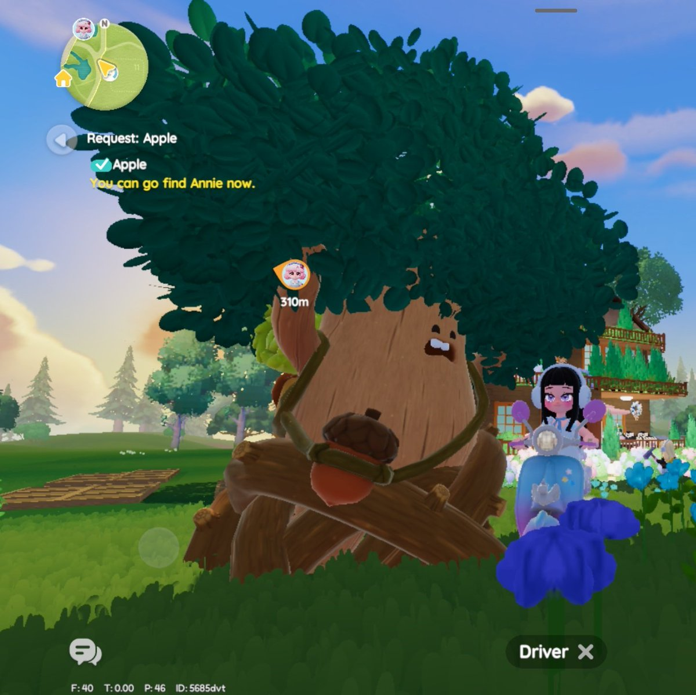
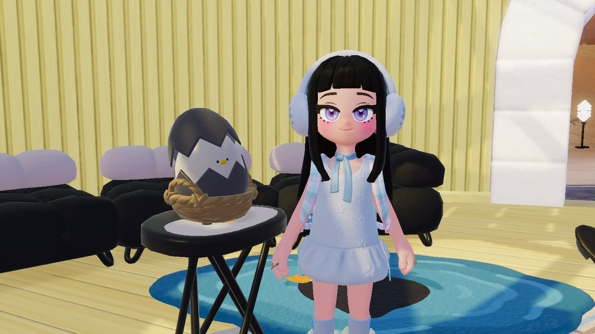
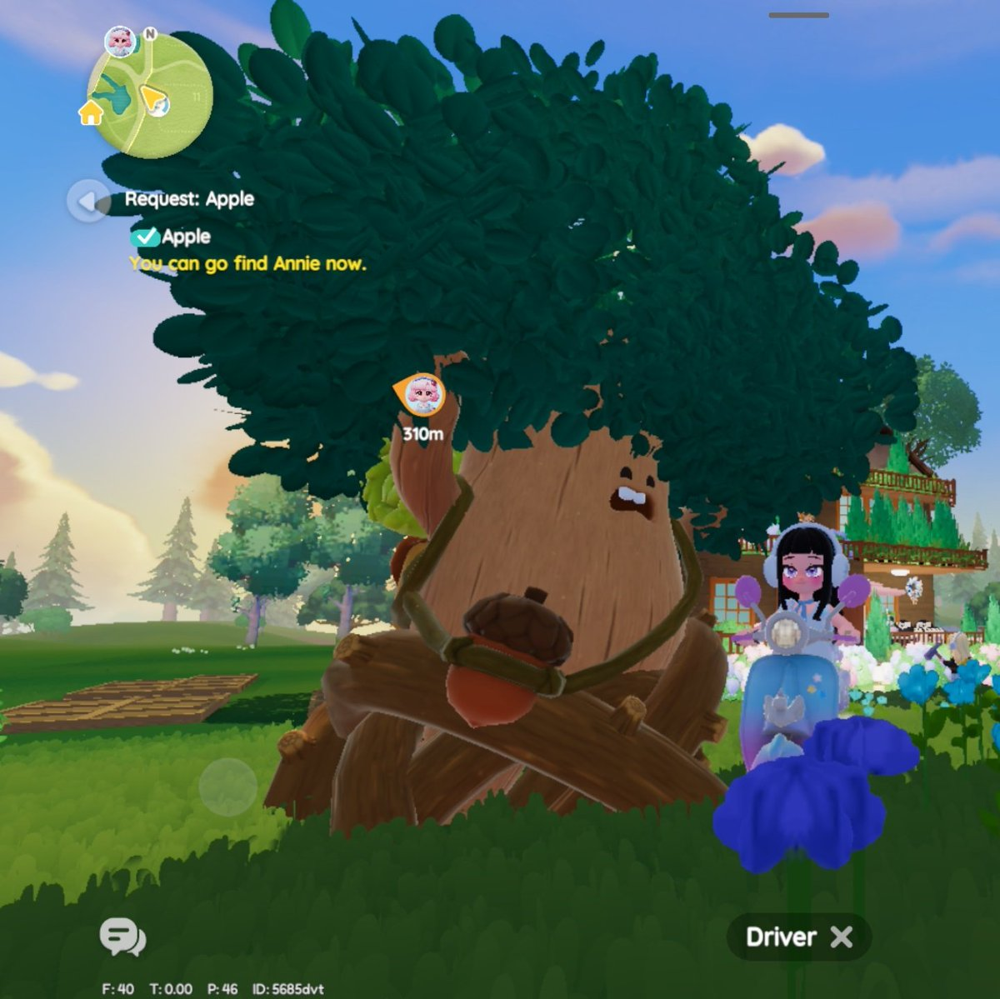
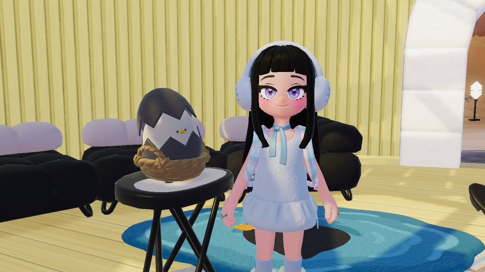
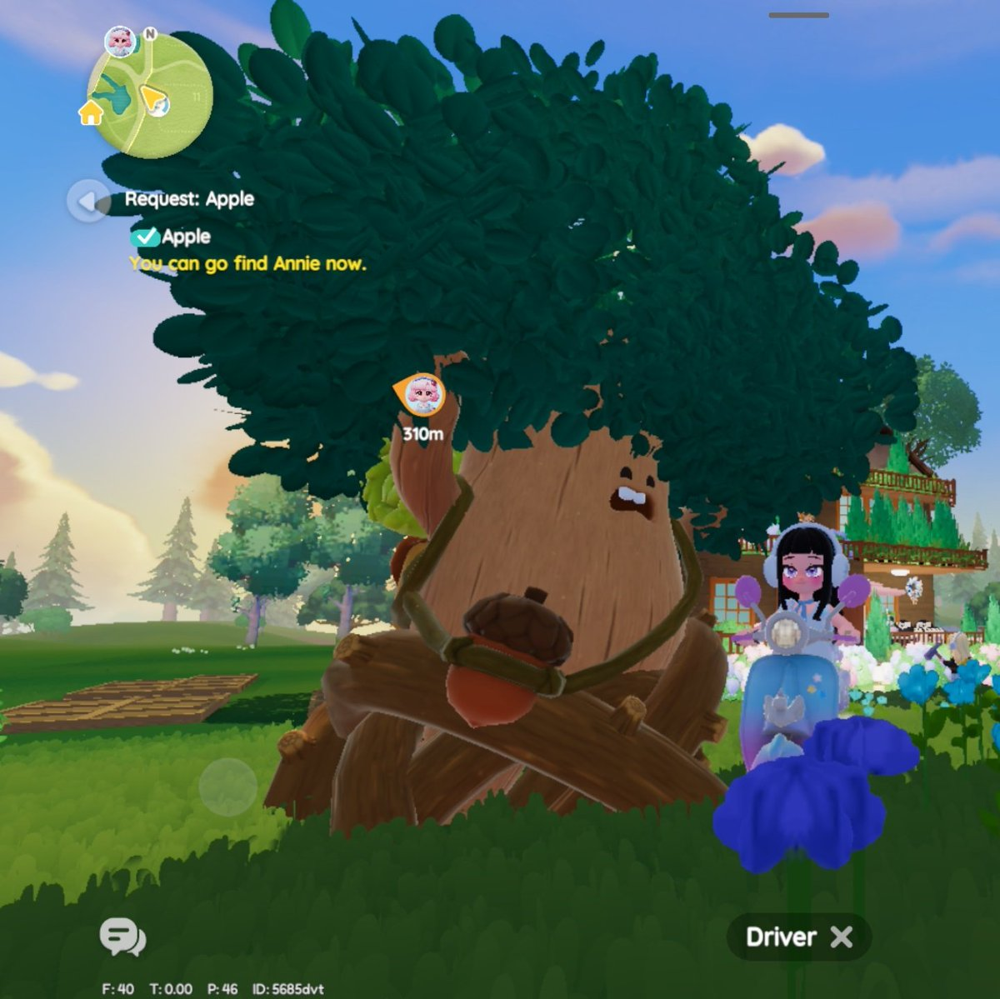
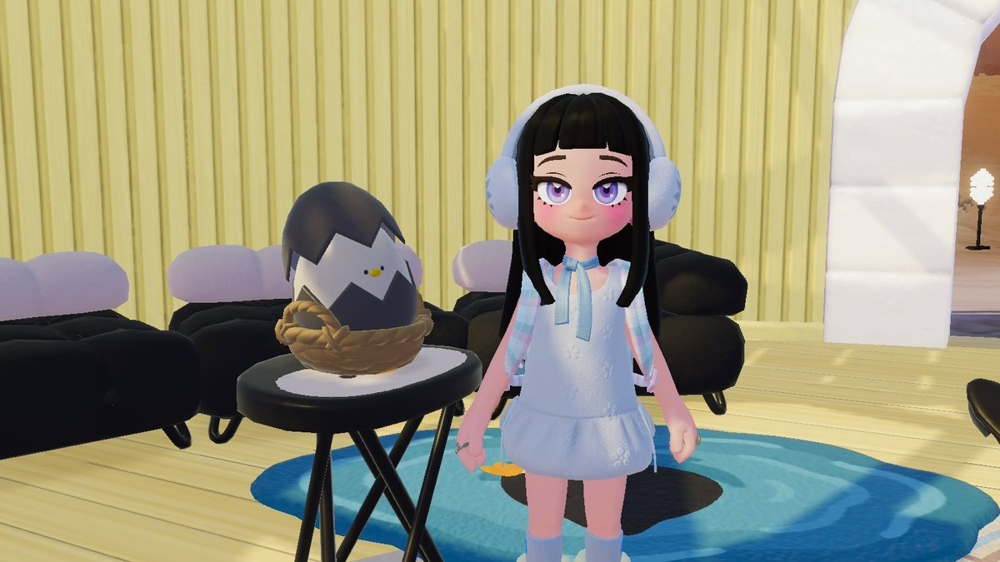
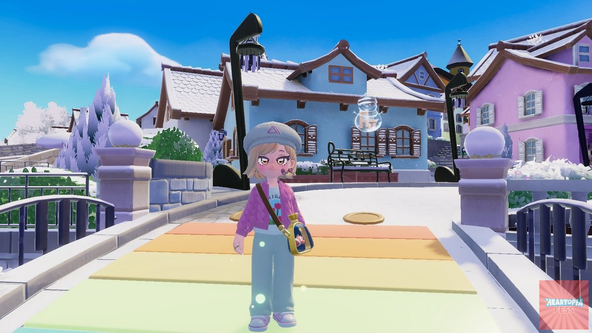
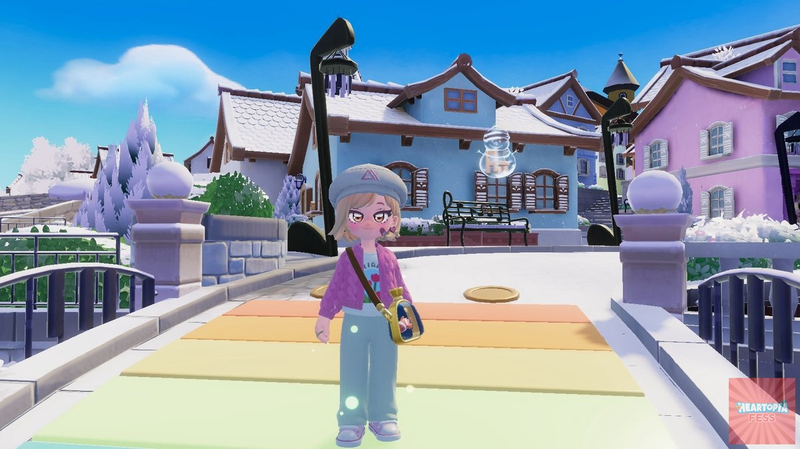

Oak Timber 11 · Fluorite 02 · Atara’s Igloo eggs · Bubble still searching.
 



06/02/2026 · Updated manually at 06:36 JST per request.
Oak Timber 11 · Fluorite 02 · Atara’s Igloo eggs · Bubble still searching.


Egg hunt Day 7: eggs inside front building, furniture bubble on rainbow bridge.


Oak and fluorite drop locations confirmed. Share your screenshots!


 

Manual refresh triggered at 06:36 JST — reconfirmed the same Heartopia locations, refreshed gallery, and noted rainfall cues from community tweets.
Collect Oak and Fluorite first, run the Egg/Bubble loop before the 20:00 JST reset, and keep this page as your quick reference. Every new update gets recorded automatically in this sandbox.